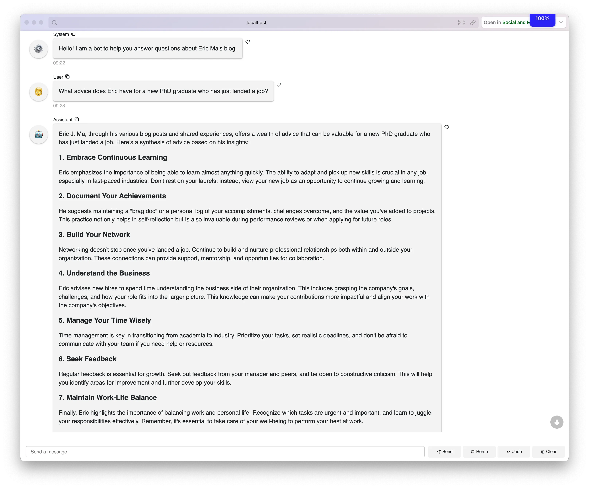

written by Eric J. Ma on 2024-03-24 | tags: llamabot querybot refactor chromadb lancedb vector database hybrid search chatui mixin panel llamabot repo chat litellm contributions open source
In this blog post, I share the latest updates of LlamaBot 0.4.0, highlighting the decoupling of document storage from text generation in QueryBot, the introduction of the ChatUIMixin for easy web UI integration, and the switch to LanceDB for its lightweight, SQLite-like handling of vectors. I also touch on enhancements to repo chat, making it simpler to launch web-based chatbots on repository content. If you're a llamabot user, I'd love to hear from you about how well it works for you!
LlamaBot 0.4.0 was released on 23 March 2024! I wanted to share some of the new things that have happened in the repo since I last wrote about it here on my blog.
The first version of QueryBot had document storage coupled tightly with an LLM -- a pattern I had picked up from LlamaIndex. But this pattern turned out to cause a world of pain when experimenting with local LLMs. It was only when I recognized that our LLM generator doesn't have to come from the same provider as our text embedder that I could refactor QueryBot into its current form, with separate systems for document storage + retrieval and text generation. Underneath the hood, I did a major refactor of QueryBot (which I only briefly alluded to before) that encoded this information, resulting in the separation of document storage/retrieval systems from text generation. Concretely, we have the following implemented in llamabot.components.docstore:
ChromaDBDocStore: backed by ChromaDB and configured to use the sentence-transformers as the embedding model providerLanceDBDocStore: backed by LanceDB and configured to use sentence-transformers as the embedding model providerBM25DocStore: in-memory document store (literally just a list of strings) using the bm25 Python package to retrieve documents.BM25DocStore exists to enable hybrid search manually as ChromaDB doesn't support it (as of 24 March 2024), but in the long run, I think BM25DocStore will go away as more vector DBs implement hybrid retrieval. It's still there as a vestige of my experimentation, though!
Additionally, I created a ChatUIMixin that enables any of LlamaBot's <X>Bots to be served as a Panel chat app. (You'll see an example below!) I first encountered the Mixin pattern for real when working with fellow PyMC developer Bill Engels on a project and thought it might be relevant for the ability to compose a bot with different pieces together.
The code looks essentially like this:
"""LlamaBot ChatUI that composes with Bots.""" from typing import Callable, Optional import panel as pn class ChatUIMixin: """A mixin for a chat user interface.""" def __init__( self, initial_message: Optional[str] = None, callback_function: Optional[Callable] = None, ): self.callback_function = callback_function if callback_function is None: self.callback_function = lambda ai_message, user, instance: self(ai_message) self.chat_interface = pn.chat.ChatInterface( callback=self.callback_function, callback_exception="verbose" ) if initial_message is not None: self.chat_interface.send(initial_message, user="System", respond=False) def servable(self): """Return the chat interface as a Panel servable object. :returns: The chat interface as a Panel servable object. """ return self.chat_interface.servable() def serve(self): """Serve the chat interface. :returns: None """ self.chat_interface.show()
The key lies in the callback_function, which by default ensures that every message sent by the user will trigger a __call__ on the bot that inherits from the ChatUIMixin, and the serve() class method that launches the Panel server and loads a browser. With this, one can create a new Bot and, with a single line change, add in web UI capabilities. Previously, you would have:
class MyBot(SimpleBot): ...
Now, you would do:
class MyBot(SimpleBot, ChatUIMixin): ...
LanceDB has been getting rave reviews from DS, ML, and AI practitioners whose opinions I respect a ton, in particular, because it's as lightweight as SQLite. Vincent Warmerdam has stated it as much:
I've been toying with LanceDB and yeah ... I totally dig it.
It gives me the SQlite feeling for vectors which is very motivating. Being able to index it to disk and send it off to a service afterwards is exactly what I want for a bunch of hobby projects.
I decided to give it a test drive and compare it to ChromaDB, which I've already been using as a default vector DB for LlamaBot's QueryBot. My first impressions were so good that I made LanceDB the default vector database storage system in LlamaBot. The most significant selling point that won me over was the availability of a full-text index alongside the vector store. This enabled me to incorporate hybrid search much more quickly as part of the document retrieval system. (Hybrid search is when we combine keyword search + vector similarity + combined ranking of documents retrieved by the two to get a (potentially) better retrieval of context for LLMs.) As a developer constantly searching for sane defaults, I was excited about this. Now, with LanceDB as the default document storage system for QueryBot, every QueryBot instantiated as of version 0.4.0 will come with hybrid search capabilities for document retrieval by default!
I also spent some time upgrading llamabot repo chat. In particular, I restored the ability to chat using the Panel app. Now, serving up a web-based chatbot on any repository's content has become much easier!
As an example, if you want to chat with my website (as a way of accessing historical snapshots of my brain), you can do it with the following llamabot command:
llamabot repo chat --model-name gpt-4-0125-preview --panel --initial-message "Hello! I am a bot to help you answer questions about Eric Ma's blog." --checkout main https://github.com/ericmjl/website
It may take ~1-2 minutes to finish cloning my website and embedding the text using the default local text embedder -- I'm too cheap to configure OpenAI as my default embedder! Once done, llamabot will launch a Panel app that you can use to chat. Try asking it some questions about stuff like leadership, career development, or LlamaBot:

Or, if you want to chat with the llamabot repo to get a personalized tutorial on how to use it, you can launch llamabot repo chat with the following command:
llamabot repo chat --model-name gpt-4-0125-preview --panel --initial-message "Hello! I am a bot to help you answer questions about the LlamaBot repository!" --checkout main https://github.com/ericmjl/llamabot
Repo chat is nothing much more than a lightweight customization around QueryBot. Most of the customization involves automatically cloning a particular repository branch and automatically launching the Panel server.
Because I rely heavily on Ollama for local LLMs, I reported an upstream issue in LiteLLM to ensure compatibility for JSON mode with OpenAI's API. (See this issue.) LiteLLM v1.32.7 should now have a uniform JSON mode API between Ollama and OpenAI!
Speaking of LiteLLM, Rena Lu of TigerEye also made her first suite of contributions, ensuring that we now pass in **kwargs in every built-in bot to LiteLLM. Stabilizing this pattern will be beneficial in the long run. She also helped test and check that releasing the upper-bound pin on LiteLLM wouldn't break anything.
You can install llamabot using:
pip install -U "llamabot>=0.4.0"
I'd love to hear about your experience using the updated QueryBot classes and llamabot repo chat!
@article{
ericmjl-2024-llamabot-040-released,
author = {Eric J. Ma},
title = {Llamabot 0.4.0 Released!},
year = {2024},
month = {03},
day = {24},
howpublished = {\url{https://ericmjl.github.io}},
journal = {Eric J. Ma's Blog},
url = {https://ericmjl.github.io/blog/2024/3/24/llamabot-040-released},
}
I send out a newsletter with tips and tools for data scientists. Come check it out at Substack.
If you would like to sponsor the coffee that goes into making my posts, please consider GitHub Sponsors!
Finally, I do free 30-minute GenAI strategy calls for teams that are looking to leverage GenAI for maximum impact. Consider booking a call on Calendly if you're interested!